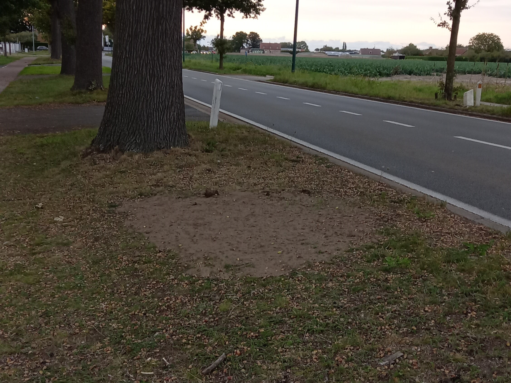
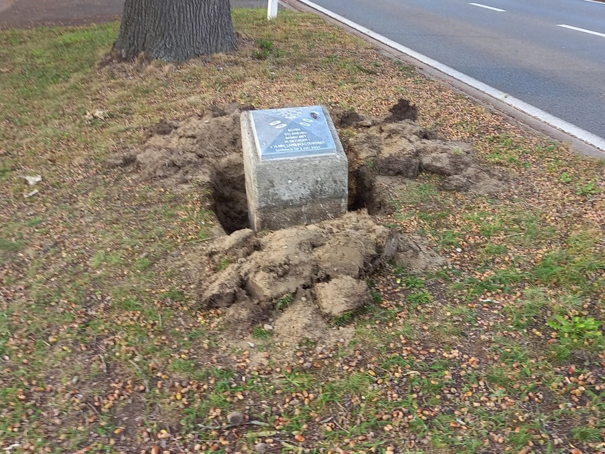
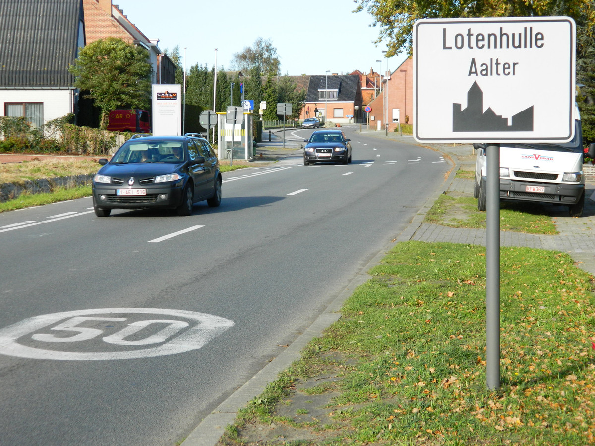
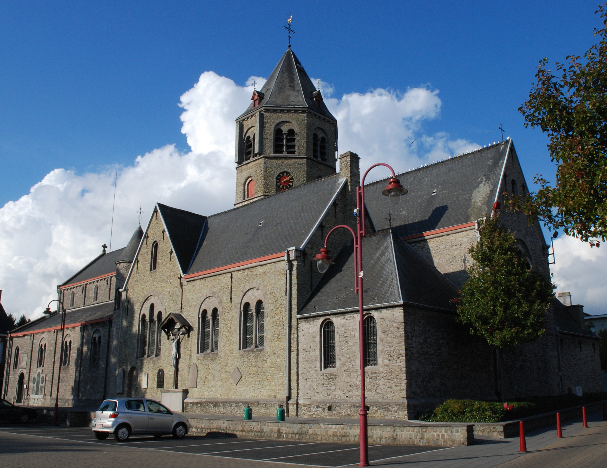

UFO-monument verdwenen uit Lotenhulle!
2025-09-24
De aliens laten er geen gras over groeien, nog geen dag later is de gedenksteen verdwenen. Voor alle zekerheid is er gecontroleerd of de gedenksteen toevallig niet op het kerkplein is opgedoken, maar dat is jammer genoeg niet het geval. Het monument is vandaag verdwenen waar het 21 jaar weer en wind heeft doorstaan.Wat nu achterblijft is een perkje onbegroeide aarde wat binnenkort zal overgroeien met onkruid. Net zoals de herinnering aan dit stukje Lootse geschiedenis. Want voor een nietsvermoedende passant is dit maar een doodgewone grasstrook langs de N409. Niemand zal nog weten welke taferelen er hier de laatste 70 jaar hebben afgespeeld. Op woensdag 24 september 2025 is zo'n 70 jaar en geschiedenis teniet gedaan. Een dag voor in de geschiedenis boeken.

UFO-monument verdwijnt uit Lotenhulle?
2025-09-23
Op dinsdag 23 september 2025 was er iets opmerkelijk te zien in Lotenhulle. Namelijk, het UFO-monument is rondomrond volledig uitgegraven. Dit moet werk zijn van aliens, zou men denken. Dat is inderdaad ook zo. Diezelfde aliens hebben ook de infopagina over het monument van de site van de gemeente Aalter gehaald. Aliens met hackercapaciteiten dus. Mocht U geïnteresseerd zijn naar de originele inhoud van de infopagina, dan kan u die hier lezen: UFO-MONUMENT (archive.org)Het UFO-monument werd ingehuldigd op 2 juli 2004. Dat staat te lezen op de onlangs gerestaureerde gedenksteen, origneel stond op die plaats de website van het Belgisch UFO Netwerk (BUFON) www.ufo.be maar die site is ook al lang niet meer in gebruik. Voor wie er helaas niet bij kon zijn op de officieele inguldiging kan deze hier (RETRO: UFO in Lotenhulle) herbekijken. Het monument is dus reeds een flinke eenentwintig jaar oud. Het voorval dat het monument herdenkt, namelijk het vliegen van 5 UFO's boven de E40 op 21 juli 1955, is dan nog veel langer geleden. Maar op 23 september 2025 is het blijkbaar genoeg geweest. Na 70 jaar, 2 maanden en 2 dagen zijn ze weeder gekeerd.
Mochten de aliens de komende dagen verder doen met de verdwijning van het monument, leest u dit hier eerstdaags.

Welkom!

In de media
| Datum | Omschrijving | Bron | tijdscode |
|---|---|---|---|
| 2025-04-09 | Lotenhulle vereeuwigd op een Poolse postzegel | radio2 middag in oost-vlaanderen | 00:20:00 |
| 2025-03-25 | Man Bijt hond - Ufo-Monument | Man Bijt Hond - s1e44 | 00:00:15 |
| 2025-03-18 | Man Bijt Hond keert terug naar Lotenhulle | Man Bijt Hond - s1e37 | 09:05:00 |
| 2015-11-09 | REPETITIEKOT: Crowd Of Chairs | Repetitiekot vi.be (poppunt) | 00:00:51 |
| 2011-01-17 - 2011-01-21 | Man Bijt Hond - Het Dorp | / | 00:00:00 |
| 2004-02-23 | Radio 1 - RETRO: UFO in Lotenhulle | RETRO: UFO in Lotenhulle | 00:00:00 | 2000-03-24 | In De Gloria - Mark Demesmaeker gaat langs bij Boer Charel | In De Gloria - s01e07 | 00:05:34 |
| 2000-03-24 | In De Gloria - De Poekebeek | In De Gloria - s01e07 | 00:01:07 |
| 1996 | Jambers - Ongetrouwde Boeren | Jambers - Ongetrouwde Boeren | 00:27:15 |
Links
Foto's

